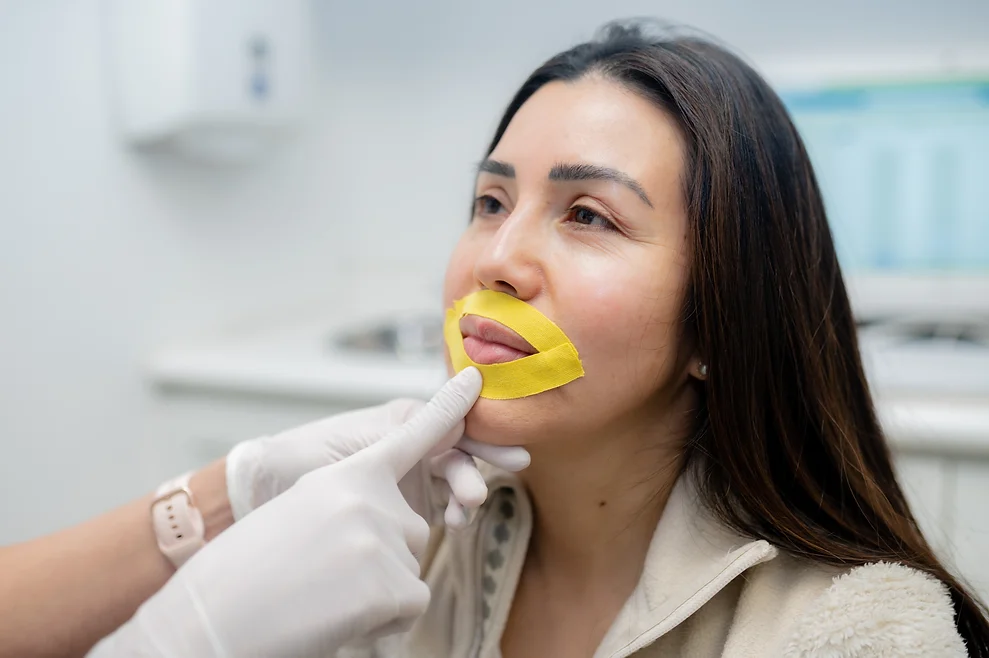
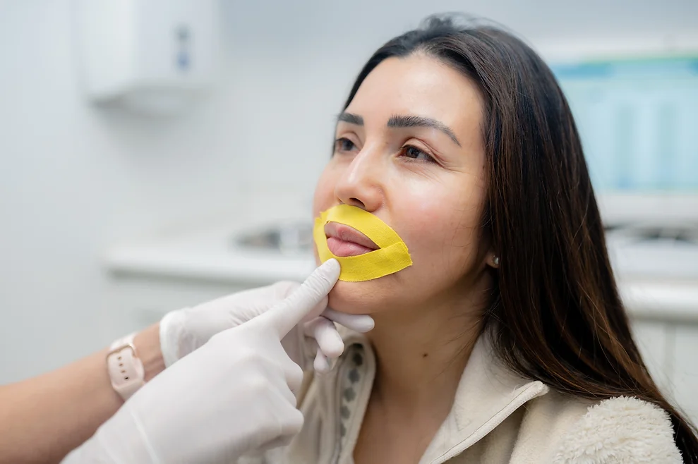

¿Qué son los trastornos orofaciales y cómo se tratan?
Los trastornos del tracto o zona orofacial son alteraciones o desequilibrios en los órganos y estructuras que se encuentran en el área intraoral o extraoral. Pueden afectar la funcionalidad, tonicidad o forma natural de estos. Los órganos pertenecientes a esta zona realizan funciones orofaciales, como la masticación y deglución de alimentos, respiración y algunas relacionadas con el habla. Este tipo de trastornos pueden presentarse en personas de todas las edades. Desde niños muy pequeños hasta adultos. Existen diversos métodos y tratamientos que se aplican para curar o mejorar este tipo de trastornos. Los más populares son las terapias miofuncionales, la fisioterapia orofacial y la ortodoncia. La aplicación de estas técnicas depende del trastorno que el paciente presente, su gravedad y causa.
Moticidad Orofacial
Es el área encargada del estudio del funcionamiento del sistema estomatognático, es decir, del funcionamiento de los órganos que se encargan de respirar, masticar, comer, hablar de manera adecuada. Así como las alteraciones que no permiten un adecuado desarrollo de estas funciones.
Entre los ejercicios orofaciales tenemos: gesticulación, vocalización, ejercicios de soplo, absorción, labio y lengua.
 

La Motricidad Orofacial es una disciplina de la Fonoaudiología; cuyo objetivo es prevenir, evaluar, diagnosticar y rehabilitar las alteraciones de la musculatura del sistema orofacia